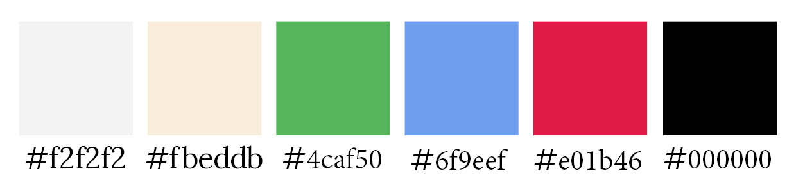

På denne side kan du læse om dokumentationen for designsystemet
Her vises et eksempel på brugen af Lightbox
[](/img/yellowstone.jpg)
I mit framework har jeg valgt at bruge en font der hedder Lora sans serif til overskrifter og brødtekst.
Curabitur vehicula metus nibh, at consectetur massa vehicula id. Vivamus tristique ante ut erat porttitor, in mollis libero molestie. Fusce turpis est, viverra eu pharetra sit amet, cursus vitae erat. Curabitur malesuada sem erat, ut mollis massa ullamcorper nec.
I dette framework kan du se hvilke farver jeg har anvendt.

I dette framework kan du lave knapper ved at tilføje classen Buttons
<a href="" class="btns">knaptekst</a>
Resultatet giver en knap som følgende:
Knaptekst